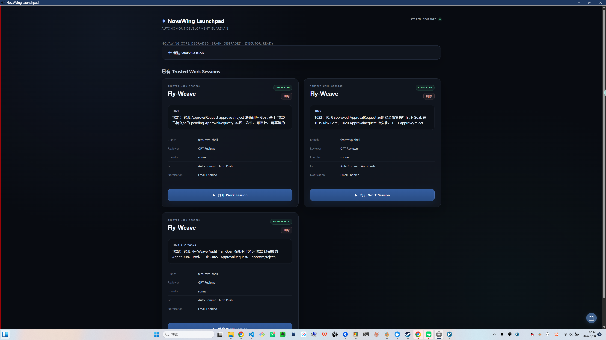
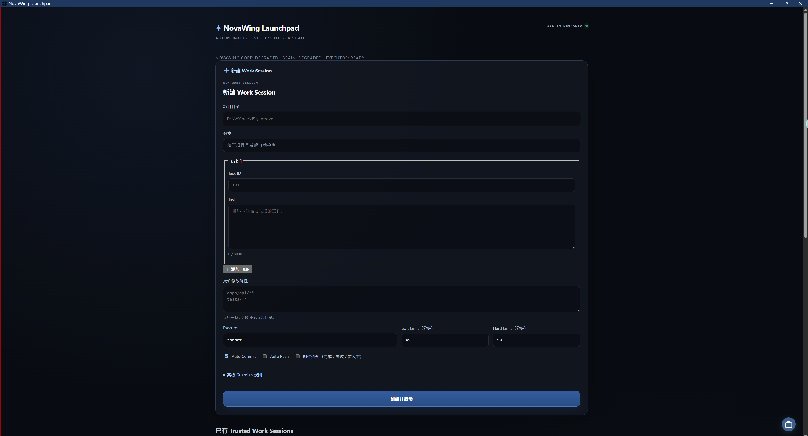
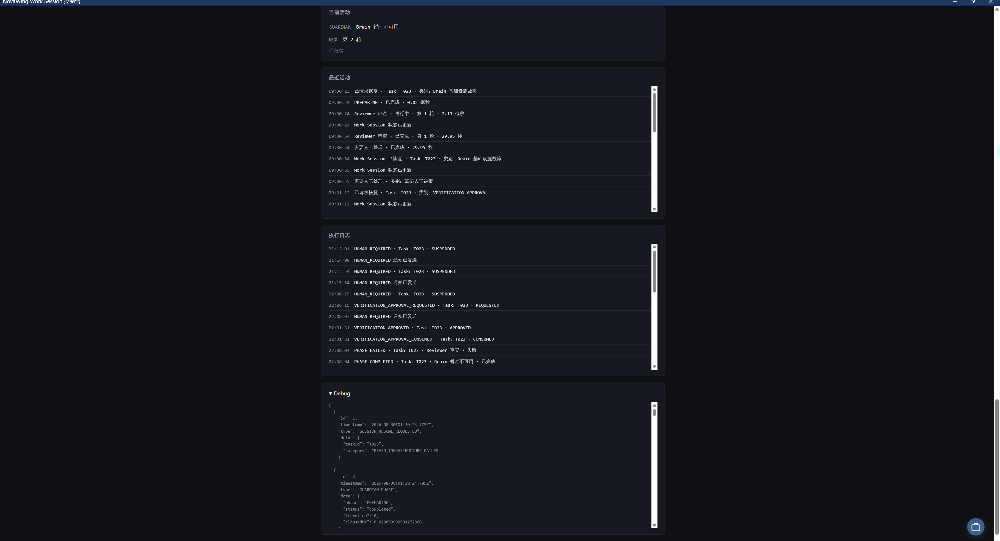

01 · Launchpad / Trusted Work Session
可看到 RECOVERABLE 会话、GPT Reviewer、Executor、Auto Commit / Auto Push，以及 Email Enabled。NovaWing 管理的是可持续、可恢复的研发会话，不是一次性聊天记录。
不是再造一个聊天框。NovaWing 把 GPT Brain / Reviewer、Claude Code / Codex Executor、规格、验证、人工审批、邮件通知和 Recovery 组织成一条可持续、可审查的软件工程执行链路。
真实 Work Session 录屏。重点不是“AI 会不会写代码”，而是任务如何被约束、执行、验证、Review，以及在关键节点如何把控制权交还给人。
下面全部来自 NovaWing 的真实 Work Session。五张图连起来是一条连续证据链：创建会话 → 受控执行 → Final Review → 可观测 → 降级恢复。

可看到 RECOVERABLE 会话、GPT Reviewer、Executor、Auto Commit / Auto Push，以及 Email Enabled。NovaWing 管理的是可持续、可恢复的研发会话，不是一次性聊天记录。

项目、分支、Task、Allowed Paths、Executor、Soft / Hard Limit、Git 行为和邮件通知在启动前显式定义。

Task、阶段、轮次、Recent Activity 与 Execution Log 持续可见。Executor 做完以后仍有独立 Reviewer 验收。

Recent Activity、执行日志与结构化 Debug Events 让长链路 Agent 任务可追踪、可回放、可审查。

Brain transport 暂时不可用时显式降级、保留 checkpoint，并提供“修复后恢复”；不会丢弃已经完成的 Executor 工作。
规格定义目标，Brain 做判断，Executor 做执行，Verification 给证据，人类保留关键控制权。
把需求、约束与验收标准变成稳定规格，减少长任务依赖临时上下文猜测。
把复杂目标拆成有稳定身份、明确边界、可追踪且可验收的研发任务。
理解任务事实、判断下一步、审查执行证据，并决定继续、修订、暂停或完成。
真正读取仓库、修改文件、增加测试、运行允许命令并返回执行证据，但无权自行降低验收标准。
确定性校验事实，在关键节点保留人类控制，并让中断任务从可信进度继续。
当任务进入审批 / 驳回、人工 continuation、高风险动作或无法安全自动裁决的关键节点，NovaWing 会先保存当前 Session / checkpoint，安全暂停自动执行，并自动发送邮件通知开发者。
邮件只是注意力路由，不是权限提升。开发者允许继续后，原 Goal、Constraints、Acceptance Criteria、Allowed Paths 与 Forbidden Paths 仍然有效。
以下文档在 GitHub 中打开，由 GitHub 原生渲染 Markdown；产品页保持不跳走，技术文档在新标签页继续深挖。